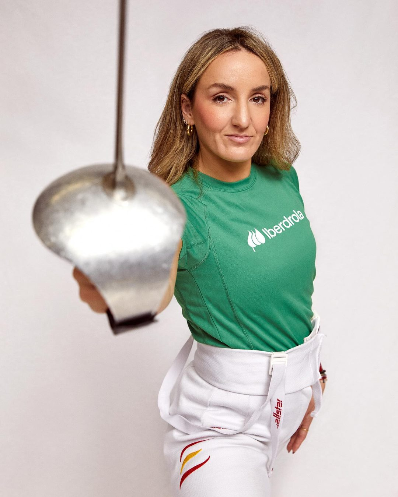
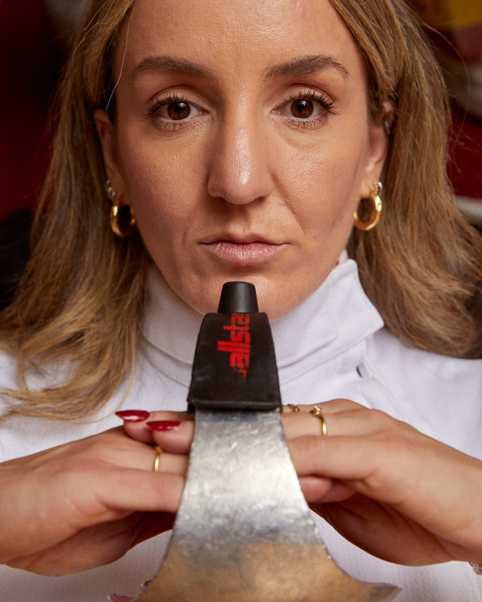

Las tres armas
Cada esgrimista se especializa en una de estas modalidades:
- Espada: todo el cuerpo es superficie válida.
- Florete: solo puntúa el tronco.
- Sable: se puede tocar con la punta o el filo, de cintura hacia arriba.

Nacida en Villanueva de la Cañada (Madrid), Lucía Martín-Portugués es una de las referentes del sable español, campeona de Europa individual y olímpica en París 2024.
Como muchas niñas de los 90, empezó en ballet mientras su hermano hacía esgrima. Con siete años lo tuvo claro: lo suyo era «menos tutú y más tratrá».
Se quedó con el sable, el arma que se practicaba en su club, y descubrió que las mujeres también podían hacer deportes de combate cuando escuchó una charla de la taekwondista Coral Bistuer en su pueblo.
A los 17 años le diagnosticaron epilepsia. Nunca dejó de entrenar: probó tratamientos hasta encontrar el adecuado y hoy la tiene controlada. Su mensaje para quien convive con la enfermedad es no resignarse.
Con su entrenador José Luis Álvarez ha llegado al top 5 mundial. En París 2024 fue la primera esgrimista española en unos Juegos desde Pekín 2008. Prepara cada competición con su entrenador, su psicólogo deportivo y su nutricionista, convencida de que el resultado es la consecuencia del rendimiento.
Siempre compite con la cruz de su padre, fallecido cuando ella disputaba un Europeo, al que prometió que algún día se hablaría de ella en España. Ha compaginado la alta competición, con jornadas de hasta siete horas de entrenamiento, con los estudios de Odontología en la Universidad Complutense. Es embajadora de Iberdrola.
«Siempre digo que no hay que resignarse, que hay que seguir luchando.»
El Mundo
«Perder no determina mi nivel deportivo.»
Women's Health
«Soy mi peor enemigo y mi mejor aliado, por eso trabajo tanto la voluntad.»
¡HOLA!
«Temo más no vivir por miedo a la herida y la muerte que a la propia enfermedad.»
ABC
| Competición | 🥇 | 🥈 | 🥉 |
|---|---|---|---|
| Campeonatos de Europa | 1 | 0 | 1 |
| Grandes premios | 1 | 1 | 2 |
| Copa del Mundo | 1 | 5 | 4 |
| Juegos del Mediterráneo | 1 | 0 | 1 |
Fuentes: perfil de la FIE y rankings de la FIE (consultados el 2 de noviembre de 2026), Wikipedia.
Calendario FIE de sable femenino absoluto, temporada 2026–2027.
El Cairo, EGY · Individual y equipos
Orléans, FRA · Individual
Túnez, TUN · Individual
Fuente: calendario de la FIE (consultado el 2 de noviembre de 2026). Las fechas pueden cambiar; la participación de Lucía en cada prueba no está confirmada.
La esgrima es un deporte olímpico que combina velocidad, estrategia y precisión. Dos tiradores se enfrentan intentando tocar al rival con su arma para sumar puntos, en un deporte donde la técnica y la toma de decisiones son tan importantes como la condición física.
Cada esgrimista se especializa en una de estas modalidades:
Un deporte para todas las edades que desarrolla tanto las capacidades físicas como los valores personales. ¿Quieres saber más? Mantente en contacto. 🗡️🏆
Lucía comparte con deportistas y organizaciones lo que le ha enseñado la alta competición.
